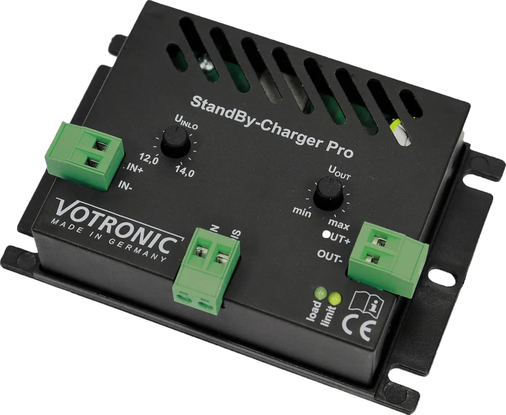
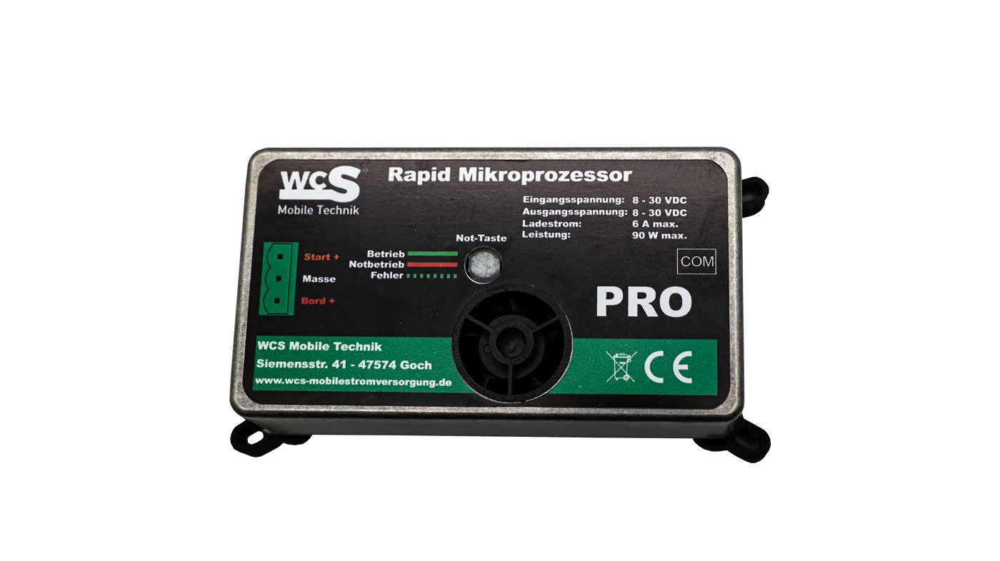
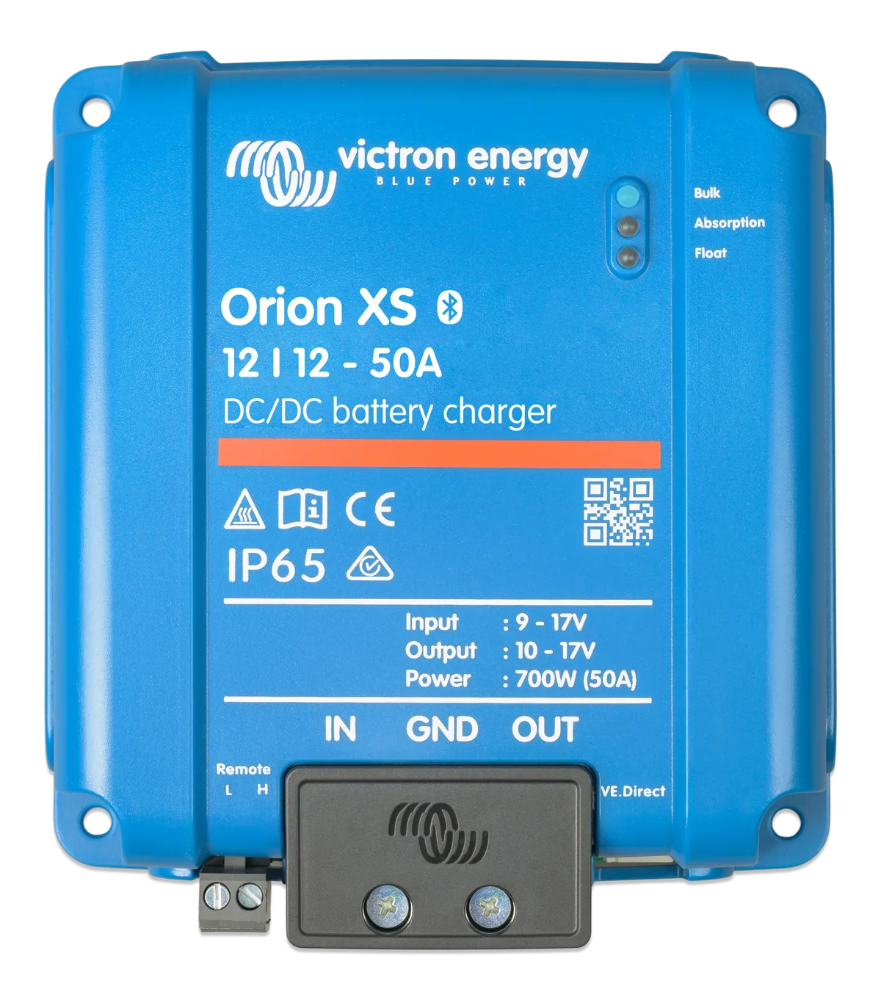

StandBy-Charger Pro vs. WCS Rapid: Welcher hält die Starterbatterie fit?
120 Euro oder 429 Euro: Beide Geräte sollen die Starterbatterie aus der Aufbaubatterie nachladen. Der entscheidende Unterschied liegt nicht in einem Ampere, sondern in Kühlung, Steuerung, Bedienung und dem konkreten Einsatzfall.
Direkte Antwort
StandBy-Charger Pro oder WCS Rapid: Welcher ist besser?
Für die reine Ladeerhaltung der Starterbatterie ist der Votronic StandBy-Charger Pro die preislich deutlich günstigere Lösung. Der WCS Rapid Mikroprozessor PRO ist interessant, wenn 6 A dauerhaft benötigt werden, aktive Kühlung gewünscht ist oder die fest programmierte Steuerung und Not-Taste zum Fahrzeug passen. Einen pauschalen Sieger gibt es nicht.
Im Video kostet der Rapid 309 Euro mehr und damit etwa das 3,6-Fache. Dieser Aufpreis ergibt nur dann Sinn, wenn seine Zusatzfunktionen oder die dauerhafte 6-A-Leistung einen konkreten Vorteil im eigenen Wohnmobil liefern.
Originalvergleich
StandBy-Charger Pro und WCS Rapid im Video
Im Video zeige ich beide Geräte, vergleiche Preis, Maße, Kühlung und Ladestrom und ordne den Victron Orion XS als mögliche Alternative ein. Der Artikel ergänzt Herstellerangaben und bleibt auch ohne Video vollständig verständlich.
Video direkt auf YouTube ansehen: WCS Rapid Mikroprozessor PRO vs. Votronic Standby Charger Pro
Vergleichsbasis
Beide halten die Starterbatterie am Leben
Moderne Fahrzeuge ziehen auch im Stand kleine Ströme. Steuergeräte, Alarmanlage, Radio oder weitere Verbraucher können die Starterbatterie über Wochen und Monate entladen. StandBy-Charger Pro und Rapid übertragen deshalb Energie aus der Aufbaubatterie zur Starterbatterie.
Das funktioniert nur, solange in der Aufbaubatterie ausreichend Energie vorhanden ist. Solar oder Landstrom können diese Energiebilanz verbessern. In einer Halle ohne Solarertrag bleibt trotzdem regelmäßige Kontrolle nötig.
Daten aus Video und Herstellerunterlagen
StandBy-Charger Pro vs. WCS Rapid im direkten Vergleich
| Kriterium | Votronic StandBy-Charger Pro | WCS Rapid Mikroprozessor PRO |
|---|---|---|
| Preis im Video | 120 € | 429 € |
| Abmessungen | 105 × 71 × 25 mm | 115 × 84 × 32 mm |
| Ladestrom | maximal 8 A; laut Video bei Übertemperatur etwa 5 A | 6 A Dauerleistung |
| Kühlung | passiv | aktiv mit Lüfter |
| Spannungssteuerung | Unterspannungsgrenze und Ausgangsspannung am Gerät einstellbar | Herstellerseitig programmiert; hält die Starterbatterie laut WCS bei bis zu 12,8 V |
| Motor läuft | Signaleingang zum Abschalten bei laufender Lichtmaschine | Steuerung geräteintern; fahrzeugbezogenen Anschlussplan beachten |
| Manuelle Zusatzfunktion | Externer Schalter zum Aktivieren und Deaktivieren möglich | Not-Taste für ein zeitlich begrenztes Ladeprogramm mit bis zu 6 A |
| Geeigneter Schwerpunkt | Preisbewusste, einstellbare Ladeerhaltung | Dauerhafte 6 A, aktive Kühlung und vorkonfigurierte Bedienung |
Der Votronic ist 10 mm kürzer, 13 mm schmaler und 7 mm flacher. Beide Geräte bleiben kompakt. Für die Kaufentscheidung ist der Platzunterschied meist weniger wichtig als die Frage, ob das Gerät seine Leistung am Einbauort dauerhaft abgeben kann.
Votronic

So arbeitet der Votronic StandBy-Charger Pro
Der Votronic erhält Energie an IN+ und IN− von der Aufbaubatterie und gibt sie über OUT+ und OUT− an die Starterbatterie weiter. Die Abschaltgrenze auf der Eingangsseite schützt die Aufbaubatterie davor, für die Erhaltung der Starterbatterie zu weit entladen zu werden.
Am Ausgang lässt sich festlegen, auf welchem Spannungsniveau die Starterbatterie nachgeladen wird. Über einen Schalterkontakt kann das Gerät aktiviert oder deaktiviert werden. Ein zusätzlicher Signaleingang sorgt dafür, dass es bei laufendem Motor beziehungsweise aktiver Lichtmaschine nicht unnötig weiterarbeitet.
Die offizielle Votronic-Anleitung nennt einen Ausgangsbereich von 12,5 bis 14,5 V und maximal 8 A. Im Video wird erklärt, dass die passive Kühlung bei hoher Temperatur zu einer Reduzierung auf etwa 5 A führen kann.
WCS

So arbeitet der WCS Rapid Mikroprozessor PRO
Beim Rapid sind die Schaltpunkte herstellerseitig programmiert. WCS beschreibt einen Betrieb zwischen 12,2 und 12,8 V: Das Gerät entnimmt Energie aus der Aufbaubatterie und hält die Starterbatterie auf bis zu 12,8 V. Sinkt die Aufbaubatterie laut Hersteller auf 12,1 V, endet die Entnahme.
Die aktive Kühlung ermöglicht 6 A Dauerleistung. Das kann wichtig werden, wenn an der Starterbatterie nicht nur Ruheströme ausgeglichen werden, sondern zeitweise weitere Verbraucher hängen.
WCS nennt drei Anschlussleitungen: Schwarz für Masse, Orange für die Starterbatterie und Rot für die Bordbatterie. Orange und Rot sollen laut Gerätebeiblatt jeweils mit 10 A abgesichert werden.
Entscheidend ist die Energiebilanz
Reichen 5, 6 oder 8 A für die Starterbatterie?
Für die reine Erhaltung sind selbst 5 A deutlich mehr als typische kleine Ruheströme. Entscheidend ist aber nicht nur der Maximalwert auf dem Datenblatt, sondern die dauerhaft verfügbare Leistung am realen Einbauort.
Der Votronic beginnt laut Vergleich mit bis zu 8 A und kann bei hoher Temperatur auf etwa 5 A reduzieren. Der Rapid liefert aktiv gekühlt 6 A dauerhaft. Nach einer thermischen Reduzierung des Votronic beträgt der Unterschied damit nur etwa 1 A.
Auch die Aufbaubatterie ist Teil der Rechnung. Jede Amperestunde, die zur Starterbatterie fließt, fehlt im Aufbau. Ohne Solarertrag oder Landstrom kann deshalb auch ein korrekt arbeitender Charger das System nicht unbegrenzt versorgen.
Zusatzfunktion des Rapid
Was bringt die Not-Taste am WCS Rapid?
Mit der Not-Taste startet der Rapid ein Ladeprogramm mit bis zu 6 A. Im Video wird eingeordnet, dass bei einer noch intakten, lediglich entladenen Starterbatterie nach ungefähr 15 bis 20 Minuten wieder ein Start möglich sein kann. WCS beschreibt das vollständige Programm mit 45 Minuten.
Das ist keine klassische Starthilfe und kein Ersatz für ein Überbrückungskabel oder einen Starthilfe-Booster. Sechs Ampere fließen als Ladestrom in die Batterie; der hohe Strom des Anlassers wird weiterhin von der Starterbatterie selbst geliefert.
Meine kritische Frage bleibt: Wenn das Ladeerhaltungs-System richtig ausgelegt ist und regelmäßig kontrolliert wird, sollte dieser Zustand gar nicht erst entstehen. Die Not-Taste ist trotzdem eine sinnvolle Reserve, wenn ein Verbraucher unerwartet Energie gezogen hat oder das Fahrzeug sehr lange stand.
Stillstand richtig planen
Ladeerhaltung ersetzt keine Kontrolle der Batterien
Eine LiFePO4-Aufbaubatterie verkraftet tiefe Zyklen in der Regel besser als eine klassische Starterbatterie. Eine Starterbatterie ist für kurze hohe Ströme ausgelegt und sollte nicht regelmäßig tief entladen werden.
Vor längerer Standzeit sollten Aufbaubatterie und Starterbatterie vollständig geladen, unnötige Verbraucher ausgeschaltet und die Ruheströme bekannt sein. Steht das Wohnmobil in einer Halle, fehlt der solare Nachschub. Dann müssen beide Batterien in sinnvollen Abständen geprüft werden.
- Vor dem Abstellen beide Batterien vollständig laden.
- Unnötige Verbraucher und nachgerüstete Geräte wirklich abschalten.
- Ruhestrom messen, statt nur den Spannungswert zu beobachten.
- Unterspannungsgrenzen passend zur Aufbaubatterie einstellen beziehungsweise prüfen.
- Bei Hallenstand ohne Solarertrag regelmäßige Kontrollen einplanen.
Andere Geräteklasse

Ist der Victron Orion XS eine günstigere Alternative?
Im Video wird der Orion XS 12/12-50A mit rund 275 Euro genannt. Damit lag er zwischen Votronic und WCS. Seine Abmessungen betragen laut Hersteller etwa 137 × 123 × 40 mm. Er ist größer, für viele Wohnmobile aber immer noch kompakt.
Technisch ist der Orion XS ein vollwertiger DC-DC-Batterielader. Victron gibt einen einstellbaren Eingangs- und Ausgangsstrom von 1 bis 50 A an. Er kann daher begrenzt werden, doch die korrekte Stromgrenze allein macht ihn noch nicht zu einem fertigen Ersatz.
Laderichtung, Motorerkennung, Remote-Eingang, Spannungsgrenzen, Ladeprofil, Leitungsquerschnitte und Sicherungen müssen neu geplant werden. Wer einfach drei Leitungen des Rapid ersetzen möchte, sollte nicht davon ausgehen, dass der Orion ohne zusätzliche Konfiguration dieselbe Logik übernimmt.
Kaufentscheidung
Für wen passt welches Gerät?
| Situation | Sinnvolle Richtung | Warum? |
|---|---|---|
| Kleine Ruheströme, überschaubares Budget | StandBy-Charger Pro prüfen | Günstiger, kompakt und für Ladeerhaltung einstellbar |
| Sechs Ampere werden dauerhaft benötigt | WCS Rapid prüfen | Aktive Kühlung und 6 A Dauerleistung |
| Standheizung im BUS-System und Wunsch nach vorkonfigurierter Lösung | WCS Rapid prüfen | Für diesen Anwendungsfall beschreibt WCS das Gerät ausdrücklich |
| Flexible DC-DC-Regelung und Einbindung in ein Victron-System | Orion XS planen | Strom, Spannung und Kommunikation sind umfangreich konfigurierbar |
| Starterbatterie wird trotz Ladeerhaltung immer wieder leer | Zuerst Ruhestrom und Batterie prüfen | Ein stärkeres Ladegerät behebt weder einen Defekt noch einen unbemerkten Verbraucher |
Der hohe Preis des Rapid ist allein durch ein Ampere mehr gegenüber dem thermisch reduzierten Votronic schwer zu begründen. Der Mehrwert liegt in der aktiven Kühlung, festen Mikroprozessor-Steuerung, Auslegung für bestimmte BUS-/Standheizungs-Szenarien und der Not-Taste. Wer diese Punkte nicht benötigt, sollte den Aufpreis kritisch prüfen.
Sicherheit und Funktion
Einbauort, Leitungen und Sicherungen entscheiden mit
Ein Charger kann nur dann zuverlässig arbeiten, wenn Leitungen, Sicherungen, Masseverbindung, Einbauort und Luftzirkulation passen. Zu dünne oder zu lange Kabel verursachen Spannungsabfall. Schlechte Kontakte werden warm und verfälschen die Spannung am Gerät.
Beim passiv gekühlten Votronic beeinflusst der Einbauort, wann die Leistung reduziert wird. Beim aktiv gekühlten Rapid muss der Lüfter frei arbeiten können. Beide Geräte sollten vor Feuchtigkeit geschützt und entsprechend der Herstelleranleitung montiert werden.
Den größeren Systemzusammenhang erkläre ich im Ratgeber zum Ladebooster im Wohnmobil. Für Fragen zu Ladezustand, Spannungsabfall und falscher Anzeige hilft der Beitrag LiFePO4-Batterie lädt nicht voll.
Transparenz & Aktualität
Quellen, Methode und Preisstand
Die Vergleichswerte und die persönliche Einordnung stammen aus meinem am veröffentlichten Video und dem dazugehörigen Transkript. Technische Angaben wurden mit den öffentlich erreichbaren Herstellerunterlagen abgeglichen.
- VoltKompass-Video: WCS Rapid Mikroprozessor PRO vs. Votronic Standby Charger Pro
- Votronic: Montage- und Bedienungsanleitung StandBy-Charger Pro
- WCS: Produktseite Rapid Mikroprozessor PRO
- WCS: Gerätebeiblatt Rapid Mikroprozessor PRO
- Victron Energy: Technische Daten Orion XS 12/12-50A
Die Preise 120 Euro, 429 Euro und rund 275 Euro sind der Preisstand des Videos vom Juni 2026 und keine aktuellen Angebote. Der Beitrag enthält keine Affiliate-Links. Es wurden keine Langzeitmessung, kein Labortest und kein standardisierter Haltbarkeitstest durchgeführt.
FAQ
Häufige Fragen zu StandBy-Charger Pro und WCS Rapid
Was ist der wichtigste Unterschied zwischen StandBy-Charger Pro und WCS Rapid?
Der Votronic liefert maximal 8 A und reduziert bei hoher Temperatur laut Vergleich auf etwa 5 A. Der WCS Rapid ist aktiv gekühlt und für 6 A Dauerleistung ausgelegt. Zusätzlich arbeitet der Rapid mit fest programmierter Steuerung und einer Not-Taste.
Was kosten StandBy-Charger Pro und WCS Rapid?
Im VoltKompass-Video vom Juni 2026 werden 120 Euro für den StandBy-Charger Pro und 429 Euro für den WCS Rapid Mikroprozessor PRO genannt. Der Rapid kostet damit 309 Euro mehr. Die Beträge sind keine aktuellen Angebote.
Kann der WCS Rapid eine leere Starterbatterie starten?
Nein, der Rapid ist kein Starthilfegerät. Über die Not-Taste lädt er die Starterbatterie mit bis zu 6 A. Bei einer noch intakten, nur entladenen Batterie kann dadurch nach einiger Ladezeit wieder ein Start möglich sein. Eine geschädigte Batterie wird damit nicht repariert.
Ist der normale Votronic StandBy-Charger mit dem Pro-Modell vergleichbar?
Nein. Dieser Beitrag behandelt ausdrücklich den Votronic StandBy-Charger Pro. Der ältere beziehungsweise einfache StandBy-Charger ist technisch ein anderes Gerät und darf nicht mit dem Pro-Modell gleichgesetzt werden.
Reichen 5 oder 6 A für die Starterbatterie im Wohnmobil?
Für Ladeerhaltung und den Ausgleich kleiner Ruheströme können 5 oder 6 A ausreichen. Laufen Verbraucher wie Standheizung oder Radio über die Starterbatterie und überschreitet deren Bedarf die verfügbare Ladeleistung dauerhaft, sinkt der Ladezustand trotzdem.
Ist der Victron Orion XS eine direkte Alternative zum WCS Rapid?
Nicht ohne Prüfung. Der Orion XS ist ein konfigurierbarer DC-DC-Lader mit einem Strombereich von 1 bis 50 A und gehört damit in eine andere Geräteklasse. Stromgrenze, Laderichtung, Ein- und Ausschaltlogik, Batterieprofil, Kabel und Sicherungen müssen zum Fahrzeug passen.
Fazit
Der Votronic gewinnt beim Preis, der Rapid bei Dauerleistung und Komfort
Für 120 Euro bietet der StandBy-Charger Pro einstellbare Ladeerhaltung mit bis zu 8 A. Wird er am Einbauort warm, kann seine Leistung laut Video auf etwa 5 A sinken. Der WCS Rapid kostet 429 Euro, liefert aktiv gekühlt 6 A dauerhaft und ergänzt eine vorkonfigurierte Steuerung sowie die Not-Taste.
Ob diese Vorteile 309 Euro Aufpreis wert sind, hängt nicht vom Datenblatt allein ab. Miss Ruheströme, kläre die Verbraucher an der Starterbatterie und prüfe, wie die Aufbaubatterie im Stillstand nachgeladen wird. Erst danach lässt sich beurteilen, welches Gerät zum System passt.
In der VoltKompass-Beratung ordnen wir Ruheströme, Batterien, Ladequellen, Steuerlogik, Kabelwege und Absicherung gemeinsam ein.
Beratung unverbindlich anfragen →Preis- und Sicherheitshinweis: Die genannten Preise stammen aus dem Video vom Juni 2026. Der Beitrag ist eine technische Einordnung und keine fahrzeugspezifische Einbauanleitung. Falsche Leitungsquerschnitte, Sicherungen, Anschlüsse oder Ladeparameter können Batterien, Geräte und Fahrzeug beschädigen oder Brände verursachen.